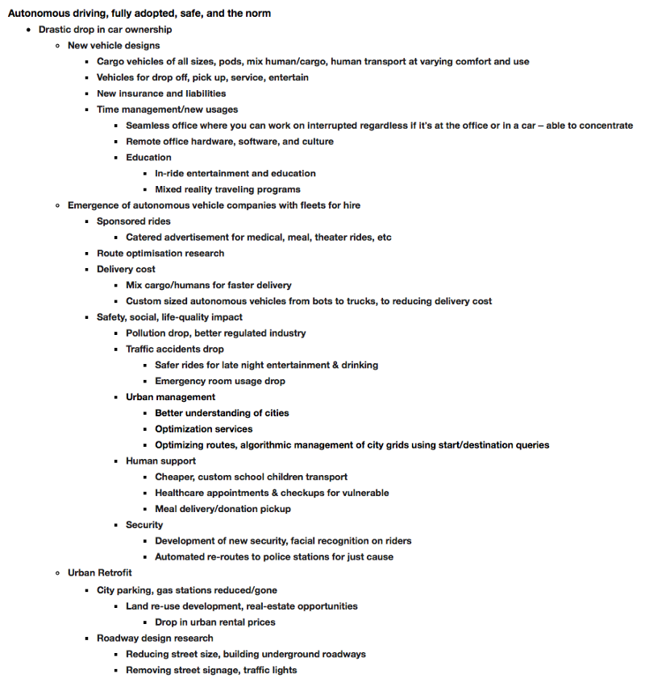

TensorFlow Won the Attention Battle, Who’s Next?
Published on Jun 23, 2018 on Medium.com

(Source: Lucas Amunategui)
At a recent conference, a European university presented a gigantic TensorFlow network cluster. One attendee asked if they tried the same approach with Caffe or MXNet, to which the presenter shrugged and explained that TensorFlow won the attention battle and, for a university program like his that runs on volunteers, that attention, the cool frameworks, things that kids want to learn, is his only currency.
That comment got me thinking; he needs student-volunteers to keep his research going, and he pays them by offering real experience using technologies that will, in turn, get the attention of recruiters.
When do we know that a technology has reached critical mass? How can we measure new comers and gauge their chances of adoption so we can stay a step ahead? I use visualization to help me extend a promising technology into the future.
Each stage is equally interesting and analyzing the “who’s who at what stage” can be strategic in many ways. Let’s work our way backwards and start from the end — the victory stage.
Victors
TensorFlow won this round, other domains won theirs. Take JavaScript, “For the sixth year in a row, JavaScript is the most commonly used programming language” or Python, “Python has a solid claim to being the fastest-growing major programming language”, all according to StackOverflow’s 2018 Insights Survey.
Though a bit obvious after the fact, it can be helpful when you’re searching for developers. If you’re like that university and need volunteers, or have a limited budget or in an industry that has a tough time recruiting, stick to certified ‘cool’ languages and frameworks, you’ll be surprised at how many young folks or those changing careers will appreciate the exposure. It’s a win-win, and its the “victory” stage.
Still Fighting
The “battle” stage is the Cambrian explosion of different technologies trying to be first, trying to be different, pounding their chests, and begging for adoption. Here, the idea gained interest but the technologies around it are still emerging and creators are duking it out — think cryptos, blockchains, chatbots, automated ml tools, 3D printing — nobody has won yet and its bloody!! Just look at all those outlandish promises posted on LinkedIn…
You can use all sorts of tools to gauge how a particular implementation is doing. Look at how much money they’ve raised, what people are writing about on Reddit, TechCrunch, or Medium sites. Take a look at their Github pages, the number of forks, comments and related StackOverflow issues. Picking winners at this stage takes observation skills, foresight, and a systematic ear-to-the-ground attitude (and we know it isn’t always the best tech that wins).
Conceptual & Unknown
This is the “idea” phase, and its fascinating. Let’s spend some time here. The tech is either highly experimental, going on in some lab at MIT, or theoretical, with AI visionaries debating merit and impact. There, I said it, “AI”. Yes, anything on artificial intelligence lies in this stage. Machine learning, deep neural networks, etc. have made great strides, but so far, no robot has taken my job, telltale sign that singularity ain’t here yet.
The “idea” phase, especially on AI is clearly in the realm of the thinker and everybody is thinking about it. Just drop the term on Amazon search and good luck working through the results…
Visualizing the Future
But you don’t have to delve into metaphysics or watch sci-fi to get strategic insights into how things may turn out. By taking a realistic and disruptive technology, like “autonomous driving” or “robotic surgery”, and thinking through the ripple effects it would cause if it was firmly in the “victory” phase, can yield clues.
Visualization can help, imagine the full adoption of a promising technology, then imagine subsequent rippling technologies reaching adoption too, then the ripples of ripples doing the same, and so on and so forth. Keep attaching one imagined outcome onto another and see where it takes you. Avoid getting sucked into the gloom, unless it leads you to new opportunities.
For example, imagine the full adoption of autonomous, ride-sharing fleets. These are driverless, never idle, never parked, scurrying the streets 24/7 to pick us up and drop us off on our whims. Only when they’re batteries are low, dirty or sensing mechanical issues do they stop servicing customers and disappear into some industrial lot on the outskirts of the city for attention. This technology has become so popular that hardly anybody owns a car in big cities. Here are some of the highlights from my visualization exercises (full piece shown at end):
STARTING POINT
Car-ownership drop in cities after safe adoption of autonomous driving technology
VISUALIZATIONS
Seamless office — virtual environments blurring desk chair and car seat
Urban retrofit industry — reclaiming large streets, gas stations and parking lots
Facial recognition — automated re-routes to police station
Giant to mini delivery vehicle design — sized to payload
Advertising — Free/discounted rides catering to travelers destination
Special needs transportation — cheaper medical, housing, meal transportation services
This is the result of a 20 minute run and entirely subjective. Whatever the starting point, 3D printing, flying taxis, etc. should lead to an avalanche of fun, scary, interesting ideas — you too can come up with distant visions of the future, just like thought leaders, and maybe even do some early bargain shopping…
Full exercise:

Thanks for reading!
Manuel Amunategui